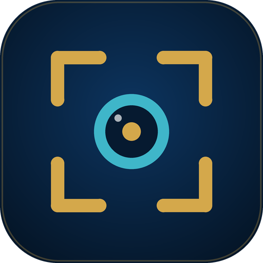

اختر مسارك، استكشف الزاوية التي تريدها، وفي النهاية ستكتشف الصورة الكاملة بنفسك.
الحلقة الأحدث
اختر موضوعاً، ثم اختر المسار الذي تريده
حلمت إنك بتطير؟ هل دي رسالة من اللاوعي ولا مجرد هبد من خلايا مخك؟ اكتشف الحقيقة علمياً!
برجك بيقول إنك هتغنى؟ هل النجوم فعلاً بتتحكم في حياتك ولا إنت ضحية تأثير بارنوم؟
هل السحر حقيقة مرعبة ولا مجرد تفسير نفسي للي مش فاهمينه؟
شايف إيه في الفنجان؟ هل الخطوط دي بتحكي مستقبلك ولا هي مجرد قراءة باردة لعقلك؟
ممكن حد يخليك تعمل أي حاجة؟ هل التنويم المغناطيسي علم حقيقي ولا مجرد شو وتمثيل؟
ليه بنصدق إن العالم متآمر علينا؟ هل في خطة سرية ولا دماغنا بيحب يربط الأحداث ببعض؟
كركم وعسل بيشفوا كل حاجة؟ هل الطب الشعبي بديل حقيقي للعلم ولا مجرد وصفات سحرية؟
في ناس بتشيل عربيات وبتمشي على النار؟ هل دي قدرات بشرية حقيقية ولا خدع فيزيائية؟
ممكن تبقى مليونير في يوم؟ هل كورسات التنمية البشرية علم حقيقي ولا مجرد بيع وهم؟
بتحس بكهرباء في إيدك؟ هل العلاج بالطاقة حقيقة علمية ولا مجرد تأثير بلاسيبو؟
شفت طبق طائر؟ هل الكائنات الفضائية زارتنا فعلاً ولا دي مجرد تخيلات وأوهام؟
سمعت صوت غريب بالليل؟ هل الأشباح موجودة فعلاً ولا مخك بيلعب بيك في الضلمة؟
شايف الصورة بتتحرك؟ هل عينك دليل كافي ولا مخك بيكمّل الصورة غلط؟ اكتشف سحر العلم!
لو عملنا نسخة منك هتبقى إنت؟ هل الاستنساخ حقيقة علمية مرعبة ولا مجرد خيال علمي؟
الـ AI هيخلص علينا؟ هل الذكاء الاصطناعي علم هيفيدنا ولا فنكوش هيسيطر على حياتنا؟
برنامج شبابي تفاعلي يضع الظواهر الشائعة تحت الاختبار. لا نهاجم معتقداً، ولا نفرض رأياً — بل نفتح مساحة نقاش حقيقية.
في بداية كل حلقة، أنت من يختار الزاوية التي تريد رؤية الموضوع منها.
كل حلقة تعتمد على مراجع علمية وآراء متخصصين.
المسارات تلتقي في نهاية واحدة تكشف الصورة الكاملة.
الهدف مساعدتك على الاستماع لكل الزوايا قبل أن تقرر بعقلك.
متأهلون لنهائيات
ضمن أفضل مشروعات الذكاء الاصطناعي
على مستوى جامعات مصر

البنية التحتية البرمجية مدعومة بواسطة: منصة كادر للذكاء الاصطناعي